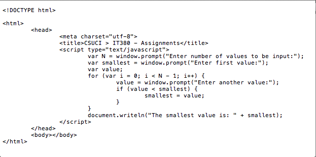

Chapter 8
Exercises
8.1
a) False. The default case is optional.
b) False. The break statement is used to exit the switch statement. The last case does not need a break statement.
c) False. Both of the expressions must be true for the whole expression to be true when using the && operator.
d) True.
8.2
a) sum = 0;
for(count = 1; count <= 99; count+= 2)
sum += count;
b) Math.pow(2.5, 3)
c) x = 1;
document.writeln("<p>");
while(x <= 20) {
document.write(x + " ");
if(x % 5 == 0)
document.write("</p><p>");
++x;
}
document.writeln("</p>");
d) document.writeln("<p>");
for(x = 1; x <= 20; x++) {
document.write(x + " ");
if(x % 5 == 0)
document.write("</p><p>");
}
document.writeln("</p>");
8.3
a) Error: The semicolon after the while statement causes an infinite loop.
Correction: The semicolon should be replaced by an opening curly brace, or both the semicolon and the closing curly brace should be removed.
b) Error: Missing break statement in the first case.
Correction: Add a break statement at the end of the statements for the first case.
c) Error: The while statement is evaluating with the wrong relational operator.
Correction: Use <= instead of <.
8.4
a) Error: The for statement causes and infinite loop as x is always larger than 1. Also, commas are used in the for statement instead of semicolons.
Correction: Use --x instead of ++x in the for statement, and replace the commas with semicolons
b) Error: Missing break statement in the first case.
Correction: Add a break statement at the end of the statements for the first case.
c) Error: The for statement causes an infinite loop as x is always larger than 1.
Correction: Use x -= 2 instead of x += 2 in the for statement.
d) Error: The while statement uses the wrong relational operator so that 100 is never printed.
Correction: Use <= instead of <.
8.5
The script creates a table with 7 rows and 5 columns. At each column for each row the coordinates of the (row,column) are displayed.
8.6

8.7